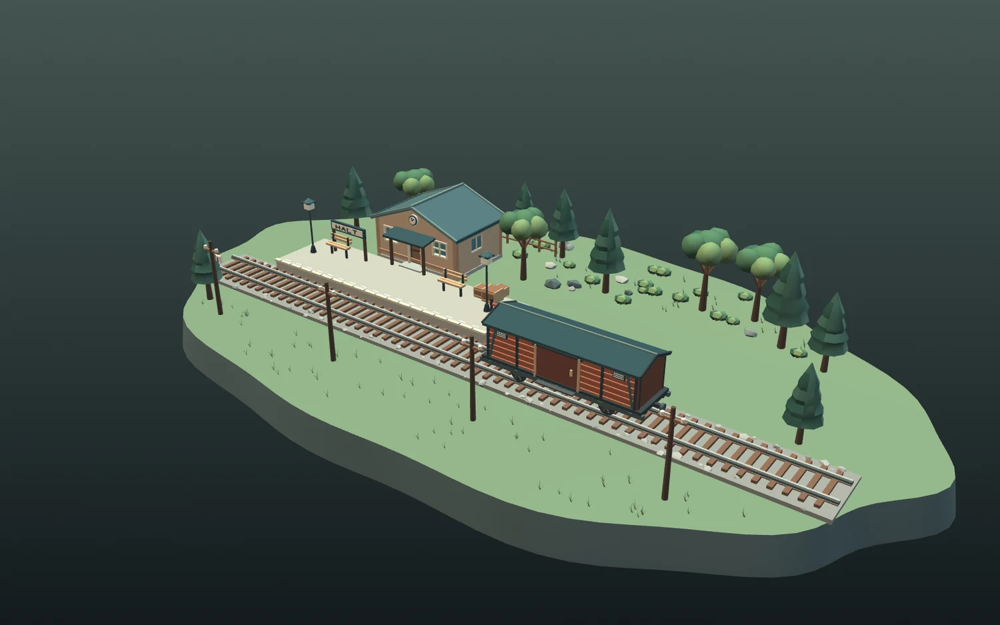
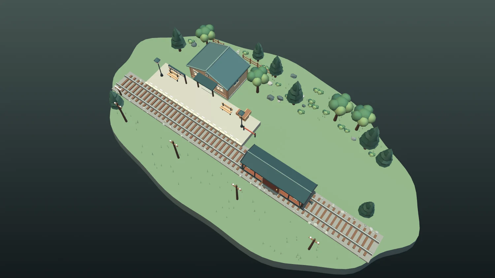
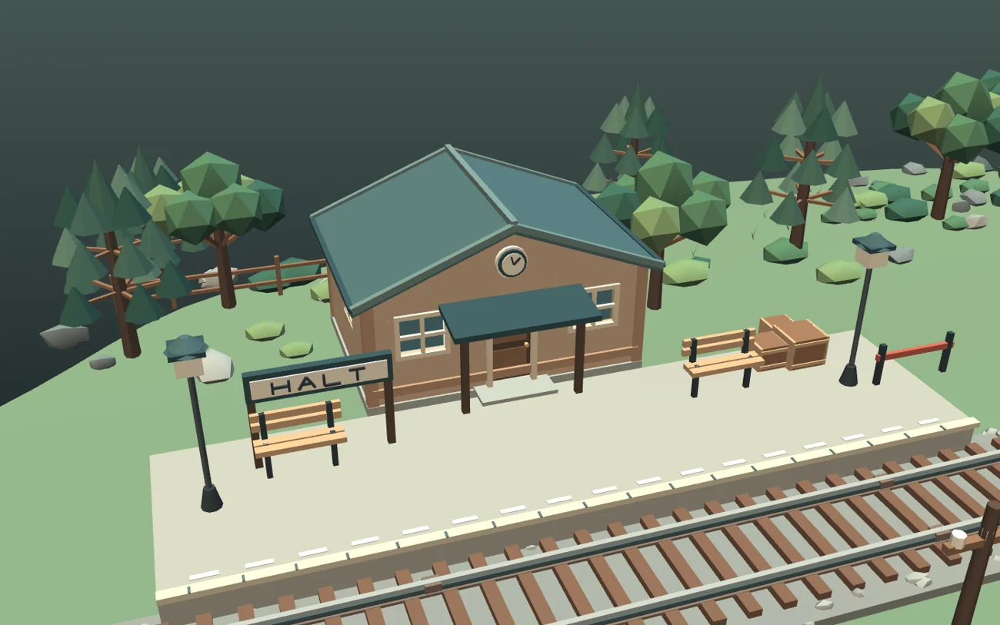
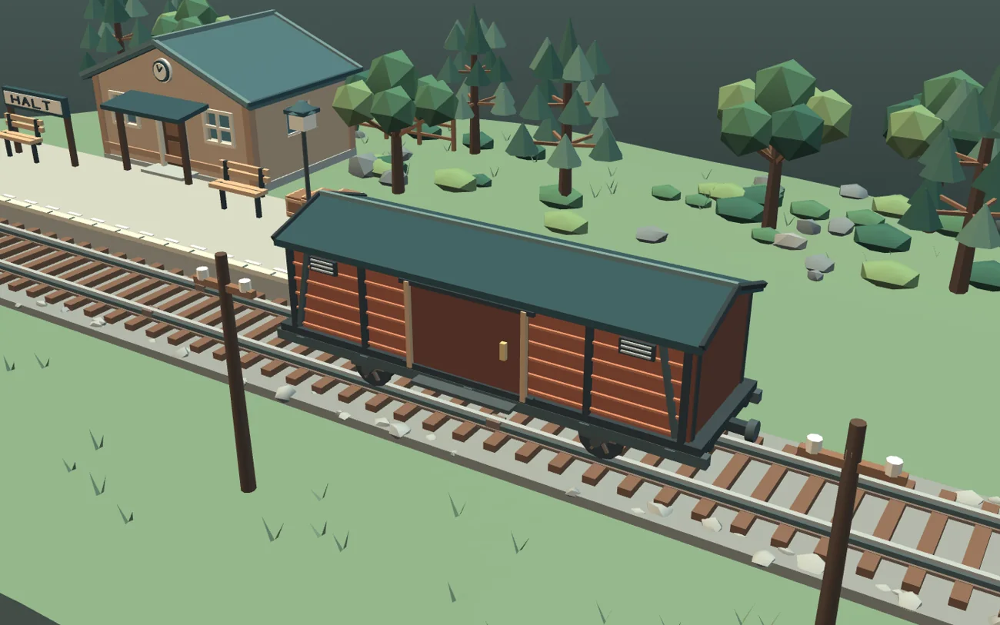
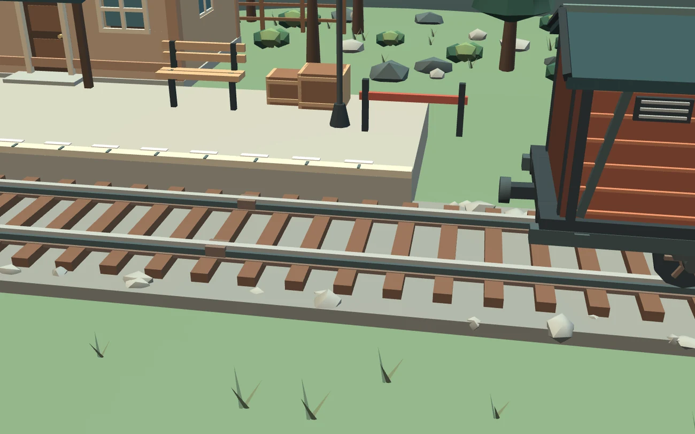

Rural
Railway Stop
& Freight Wagon.
A compact railway halt built as a coherent low-poly environment. The station, raised platform, continuous track and four-wheel freight wagon follow recognizable construction rather than decorative shapes.

One working railway.
Not disconnected props.
Rails sit on sleepers and ballast, aligned with the wagon wheels. A platform runs beside the track, leading to a station with a covered entrance. Trees, rocks, benches and telegraph poles give the small stop its rural setting.




Engineering clarity.
Low-poly discipline.
The refinement focused on physical connections, recognizable mechanisms and structural completeness.
Closed and connected.
The station has solid roof panels, gable infills, framed openings and a threshold linking the front entrance to the platform.
Wheels meet rails.
The freight wagon uses two axles, four low-poly flanged wheels, suspension brackets, sliding cargo doors, buffers and couplings. Both wagon roof ends were closed during refinement.
Respect the terrain.
The terrain was extended beyond the track ends to prevent floating sleepers. The platform, track, station and rural landscape share a consistent coordinate system.
Actual geometry.
Documented limits.
The scene was generated with original Python geometry and exported as glTF 2.0. These images are renders of the actual model, not concept art. The file is a static visual study, not an operational railway simulation.
The complete Y-up GLB (losslessly packed for web delivery) and four modular exports share the same origin. Geometry was reimported and checked for invalid vertices, degenerate triangles, roof closure and modular consistency. Roblox Studio import, collision and runtime performance remain untested.
- Format
- glTF 2.0 / GLB, Y-up
- Geometry
- 21,302 triangles; 64 grouped meshes
- Materials
- 37 flat-color PBR materials
- Tools
- Python, trimesh, NumPy, SciPy, Shapely, VTK
- Scope
- Rural station, platform, continuous track, freight wagon and vegetation
- Export
- Complete Y-up GLB plus four category-based modules
- Validation
- GLB geometry and responsive offline viewer checked; Roblox Studio pending
Built for inspection.
Not yet a Roblox place.
Low triangle count does not guarantee game performance. The geometry, scale, materials, collision and FPS must still be verified inside Roblox Studio before production use.
Static environment study. No train animation, driveable wagon, gameplay or Roblox place file is claimed.
- Import the complete and modular Y-up GLBs, preserving the origin.
- Check rail gauge, wheel alignment and wagon orientation in Studio.
- Inspect the station and wagon roof from above and below.
- Configure simple collision proxies for ground, platform and station.
- Measure draw calls, memory and FPS on the target device.